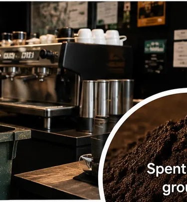
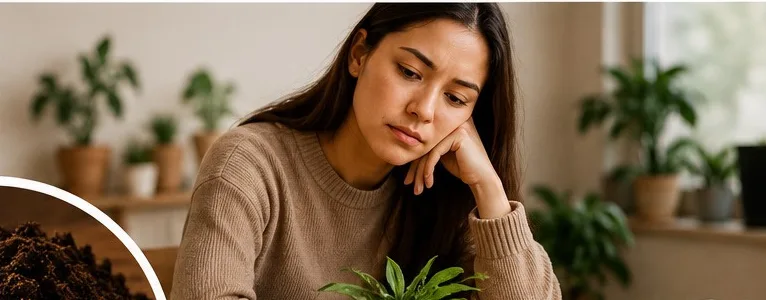

The Problem
What if coffee waste wasn't waste?

A city that runs on coffee
Auckland's café culture creates a continuous stream of spent coffee grounds. Once brewed, the grounds are wet, heavy and difficult to handle — and are commonly disposed of as general waste.

Homes that want to grow
At the same time, households, families and schools increasingly want simple, hands-on ways to grow food and experience sustainability — without needing time, space or expertise.
"A waste stream on one side. A food-growing opportunity on the other."